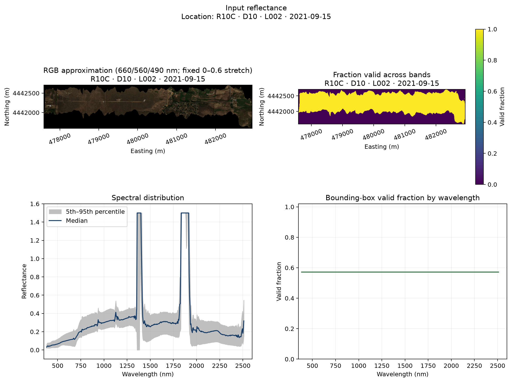
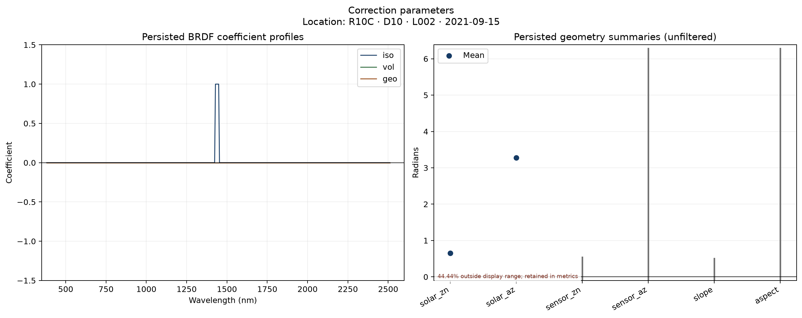
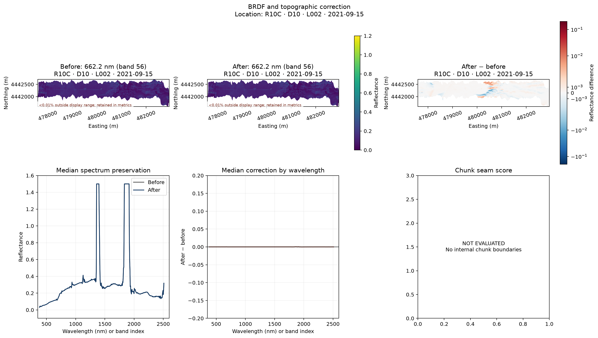

Stage QA test guide¶
This page explains every check family in the automatic stage reports, in pipeline order. Observed values and figures come from the completed R10C · D10 · L002 · 2021-09-15 run. The explanations are the reusable contract; the observed values are one example.
Three different questions
output_exists asks whether software produced an artifact. Numerical checks ask whether the artifact obeys an implementation or provisional QA contract. Scientific validation asks whether the result is accurate across representative real conditions. A PASS in one category does not answer the other two.
Status language¶
| Status | Meaning | Required response |
|---|---|---|
PASS |
Evaluated value meets its current contract. | Continue, while retaining provenance and limitations. |
WARN |
Pipeline completed, but evidence needs interpretation. | Review the named metric and figure; do not hide or automatically delete the value. |
FAIL |
A required artifact is missing or an evaluated metric crosses its fail rule. | Stop scientific interpretation until the cause is understood. |
NOT EVALUATED |
Available artifacts cannot support the requested diagnostic. | Read the recorded reason; do not reinterpret absence as a pass. |
Real-run stage summary¶
| Stage | Status | Checks | Full report |
|---|---|---|---|
| Acquisition | PASS | 1 | HTML |
| Input reflectance | WARN | 6 | HTML |
| Correction parameters | WARN | 4 | HTML |
| BRDF and topographic correction | WARN | 8 | HTML |
| Spectral convolution and brightness | PASS | 22 | HTML |
| Parquet extraction and merge | PASS | 19 | HTML |
Acquisition¶
Observed status: PASS · open HTML · open JSON
Confirm that the source artifact exists and record bounded provenance before reading reflectance.
Checks in this stage¶
| Check family | Count | Observed | Value(s) | Rule | What it asks | What to review |
|---|---|---|---|---|---|---|
output_exists:* |
1 | PASS | 1/1 present | Categorical contract | Does every declared canonical output exist? Each expected file is present at the recorded path. | A missing output is a stage failure; inspect the stage log before trusting downstream files. |
Example figure from R10C¶

Explicitly unavailable diagnostics¶
- None for this stage in the real run.
Input reflectance¶
Observed status: WARN · open HTML · open JSON
Establish spatial and spectral support before correction while distinguishing the observed footprint from rectangular background.
Checks in this stage¶
| Check family | Count | Observed | Value(s) | Rule | What it asks | What to review |
|---|---|---|---|---|---|---|
output_exists:* |
2 | PASS | 2/2 present | Categorical contract | Does every declared canonical output exist? Each expected file is present at the recorded path. | A missing output is a stage failure; inspect the stage log before trusting downstream files. |
within_footprint_valid_reflectance_fraction |
1 | PASS | 1 | warn 0.9; fail 0.7 |
How complete is spectral support inside the observed flight footprint? Above 0.90 passes; 0.70–0.90 warns; at or below 0.70 fails. | Separate real missing support from rectangular background outside the flight track. |
negative_reflectance_fraction |
1 | PASS | 0 | warn 0.01; fail 0.05 |
How often is valid reflectance negative? Below 0.01 passes; 0.01–0.05 warns; at or above 0.05 fails. | Review scaling, correction behavior, shadows, and wavelength-specific artifacts. |
usable_band_reflectance_above_1_2_fraction |
1 | PASS | 1.41814e-05 | warn 0.01; fail 0.05 |
How often do wavelengths not already labeled poor-quality exceed 1.2? Below 0.01 passes; 0.01–0.05 warns; at or above 0.05 fails. | Inspect scaling and spectral regions; all-band values remain separately reported. |
known_bad_spectral_bands_retained |
1 | WARN | 68 | Categorical contract | Were established poor-quality wavelength regions recognized and retained? No labeled bands passes; retained labeled bands warn deliberately. | The warning is a review label, not a request to delete or mask the data. |
Example figure from R10C¶
{kind=link}

Explicitly unavailable diagnostics¶
cloud_shadow_water_saturation_masks— NOT EVALUATED: The raw ENVI contract does not encode all source QA mask classes in a common field.
Correction parameters¶
Observed status: WARN · open HTML · open JSON
Review correction geometry coverage, physical ranges, and persisted BRDF coefficient profiles without filtering them.
Checks in this stage¶
| Check family | Count | Observed | Value(s) | Rule | What it asks | What to review |
|---|---|---|---|---|---|---|
output_exists:* |
2 | PASS | 2/2 present | Categorical contract | Does every declared canonical output exist? Each expected file is present at the recorded path. | A missing output is a stage failure; inspect the stage log before trusting downstream files. |
geometry_field_fraction |
1 | PASS | 1 | warn 0.99; fail 0.5 |
Are all six correction geometry summaries present? At least 0.99 passes; 0.50–0.99 warns; at or below 0.50 fails. | Missing geometry limits correction reproducibility and interpretation. |
persisted_geometry_physical_range_review |
1 | WARN | 4 | Categorical contract | Do persisted min/mean/max summaries lie within physical radian ranges? Zero fields requiring review passes; any out-of-range field warns. | Values stay unfiltered; investigate NoData contamination before changing correction logic. |
Example figure from R10C¶
{kind=link}

Explicitly unavailable diagnostics¶
- None for this stage in the real run.
BRDF and topographic correction¶
Observed status: WARN · open HTML · open JSON
Compare matched before/after products for support, magnitude, spectral behavior, and computational seams.
Checks in this stage¶
| Check family | Count | Observed | Value(s) | Rule | What it asks | What to review |
|---|---|---|---|---|---|---|
output_exists:* |
2 | PASS | 2/2 present | Categorical contract | Does every declared canonical output exist? Each expected file is present at the recorded path. | A missing output is a stage failure; inspect the stage log before trusting downstream files. |
within_footprint_valid_reflectance_fraction |
1 | PASS | 1 | warn 0.9; fail 0.7 |
How complete is spectral support inside the observed flight footprint? Above 0.90 passes; 0.70–0.90 warns; at or below 0.70 fails. | Separate real missing support from rectangular background outside the flight track. |
negative_reflectance_fraction |
1 | PASS | 0 | warn 0.01; fail 0.05 |
How often is valid reflectance negative? Below 0.01 passes; 0.01–0.05 warns; at or above 0.05 fails. | Review scaling, correction behavior, shadows, and wavelength-specific artifacts. |
usable_band_reflectance_above_1_2_fraction |
1 | PASS | 1.41415e-05 | warn 0.01; fail 0.05 |
How often do wavelengths not already labeled poor-quality exceed 1.2? Below 0.01 passes; 0.01–0.05 warns; at or above 0.05 fails. | Inspect scaling and spectral regions; all-band values remain separately reported. |
known_bad_spectral_bands_retained |
1 | WARN | 68 | Categorical contract | Were established poor-quality wavelength regions recognized and retained? No labeled bands passes; retained labeled bands warn deliberately. | The warning is a review label, not a request to delete or mask the data. |
absolute_correction_q99 |
1 | PASS | 0.00389395 | warn 0.2; fail 0.5 |
Is the extreme correction magnitude bounded? Below 0.20 reflectance passes; 0.20–0.50 warns; at or above 0.50 fails. | Review spatial support and affected wavelengths for overcorrection. |
maximum_chunk_seam_score_after |
1 | NOT EVALUATED | null | warn 1.5; fail 2.5 |
Are gradients at application boundaries larger than ordinary neighboring gradients? Below 1.5 passes; 1.5–2.5 warns; at or above 2.5 fails. | A genuine landscape edge can coincide with a boundary, so inspect the map before concluding it is computational. |
Example figure from R10C¶
{kind=link}

Explicitly unavailable diagnostics¶
chunk_seam_score— NOT EVALUATED: No internal application boundary was present or recorded for this stage.separate_topographic_and_brdf_attribution— NOT EVALUATED: The canonical stage persists only the combined corrected cube, not a topographic-only intermediate.illumination_and_geometry_residual_models— NOT EVALUATED: Standard QA does not reopen the source HDF5 ancillary rasters; enable a future ancillary-aware deep run.chunk_invariance_rerun— NOT EVALUATED: This report inspects the produced cube but does not rerun correction under an alternate chunk configuration.
Spectral convolution and brightness¶
Observed status: PASS · open HTML · open JSON
Check convolved reflectance support and independently audit every persisted Landsat brightness adjustment.
Checks in this stage¶
| Check family | Count | Observed | Value(s) | Rule | What it asks | What to review |
|---|---|---|---|---|---|---|
output_exists:* |
14 | PASS | 14/14 present | Categorical contract | Does every declared canonical output exist? Each expected file is present at the recorded path. | A missing output is a stage failure; inspect the stage log before trusting downstream files. |
within_footprint_valid_reflectance_fraction |
1 | PASS | 1 | warn 0.9; fail 0.7 |
How complete is spectral support inside the observed flight footprint? Above 0.90 passes; 0.70–0.90 warns; at or below 0.70 fails. | Separate real missing support from rectangular background outside the flight track. |
negative_reflectance_fraction |
1 | PASS | 0 | warn 0.01; fail 0.05 |
How often is valid reflectance negative? Below 0.01 passes; 0.01–0.05 warns; at or above 0.05 fails. | Review scaling, correction behavior, shadows, and wavelength-specific artifacts. |
usable_band_reflectance_above_1_2_fraction |
1 | NOT EVALUATED | null | warn 0.01; fail 0.05 |
How often do wavelengths not already labeled poor-quality exceed 1.2? Below 0.01 passes; 0.01–0.05 warns; at or above 0.05 fails. | Inspect scaling and spectral regions; all-band values remain separately reported. |
known_bad_spectral_bands_retained |
1 | NOT EVALUATED | null | Categorical contract | Were established poor-quality wavelength regions recognized and retained? No labeled bands passes; retained labeled bands warn deliberately. | The warning is a review label, not a request to delete or mask the data. |
brightness_coefficient_application:* |
4 | PASS | 2.625e-08, 2.67092e-08, 2.76194e-08, 2.61431e-08 | warn null; fail 0.0001 |
Does each persisted Landsat before/after pair reproduce its configured gain? Maximum absolute fitted gain error at or below 1e-4 passes. |
Failure means application drift; passing does not prove that the empirical coefficient is scientifically optimal. |
Example figure from R10C¶


Explicitly unavailable diagnostics¶
known_bad_spectral_band_classification— NOT EVALUATED: The ENVI header did not provide one wavelength for every band.per_band_srf_valid_coverage— NOT EVALUATED: The stage output contract does not currently persist the sampled SRF weights used for each output band.
Parquet extraction and merge¶
Observed status: PASS · open HTML · open JSON
Verify declared analysis products, DuckDB readability, row counts, schema width, and extracted-versus-merged structure.
Checks in this stage¶
| Check family | Count | Observed | Value(s) | Rule | What it asks | What to review |
|---|---|---|---|---|---|---|
output_exists:* |
18 | PASS | 18/18 present | Categorical contract | Does every declared canonical output exist? Each expected file is present at the recorded path. | A missing output is a stage failure; inspect the stage log before trusting downstream files. |
readable_parquet_outputs |
1 | PASS | 18 | Categorical contract | Can DuckDB read at least one declared Parquet product? One or more readable tables passes; none fails. | Inspect incomplete files, schema problems, and discovery paths. |
Example figure from R10C¶

Explicitly unavailable diagnostics¶
- None for this stage in the real run.
Reproduce the stage reports¶
spectralbridge-stage-qa \
--flightline-dir outputs/<flightline_id> \
--mode deep --force
deep changes deterministic sampling depth, not the scientific correction. See Stage-by-stage scientific QA for schemas, fixed plot ranges, and implementation details.
Last updated: 2026-08-14